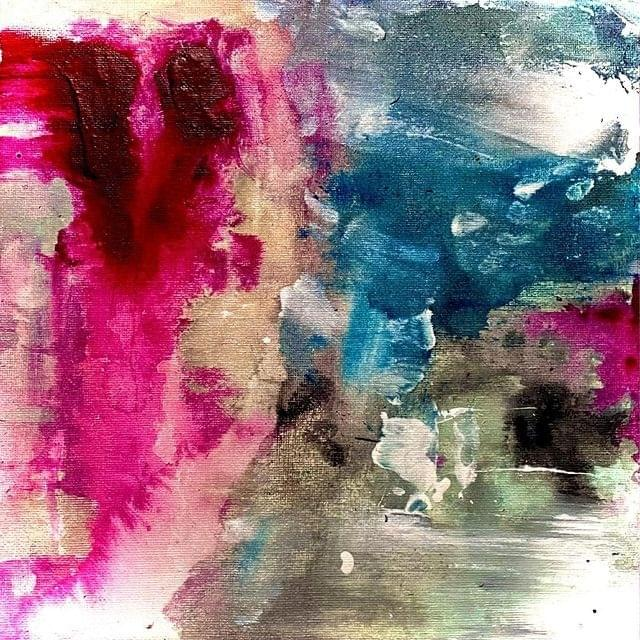
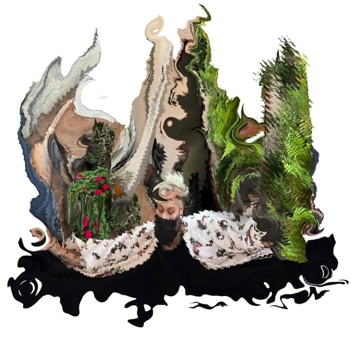
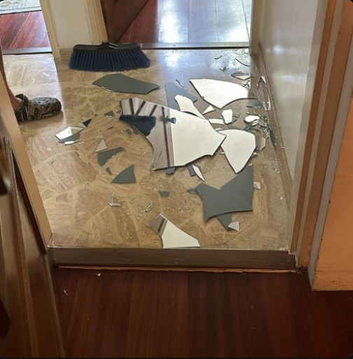
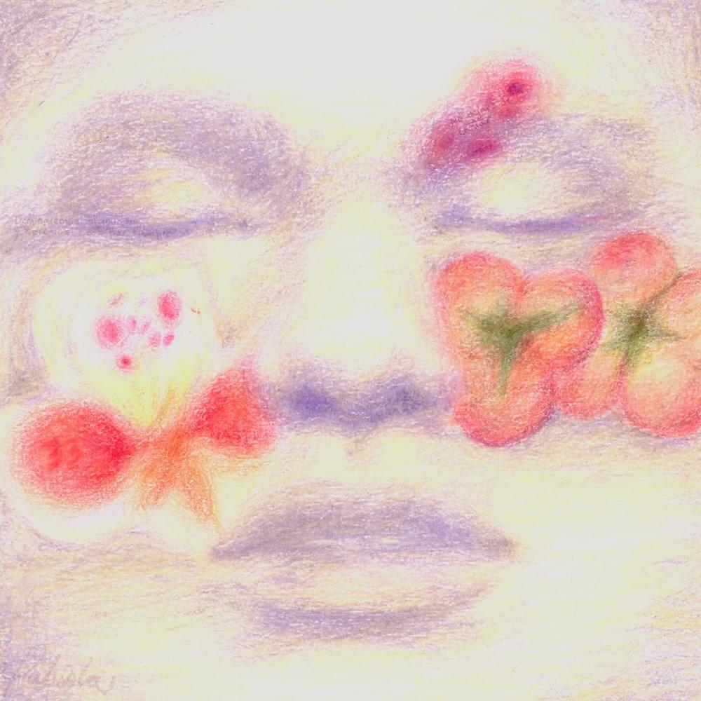
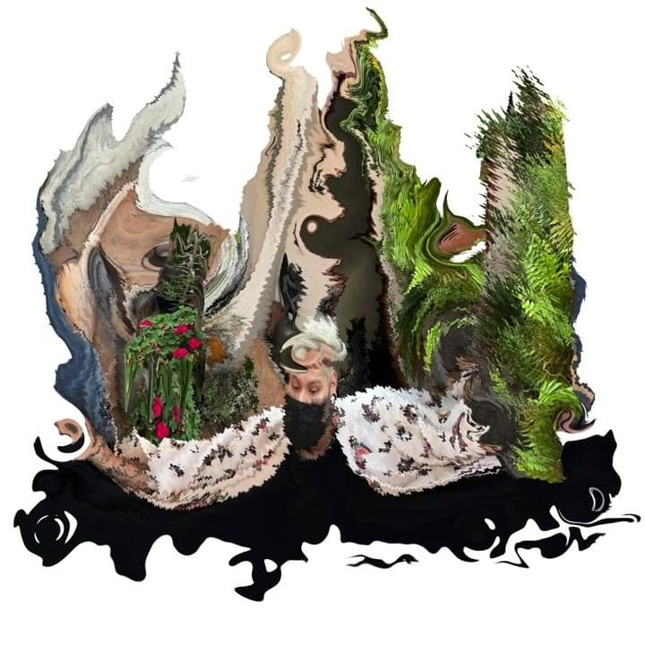
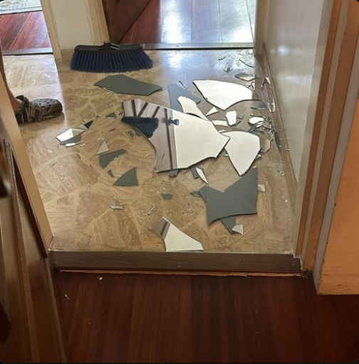
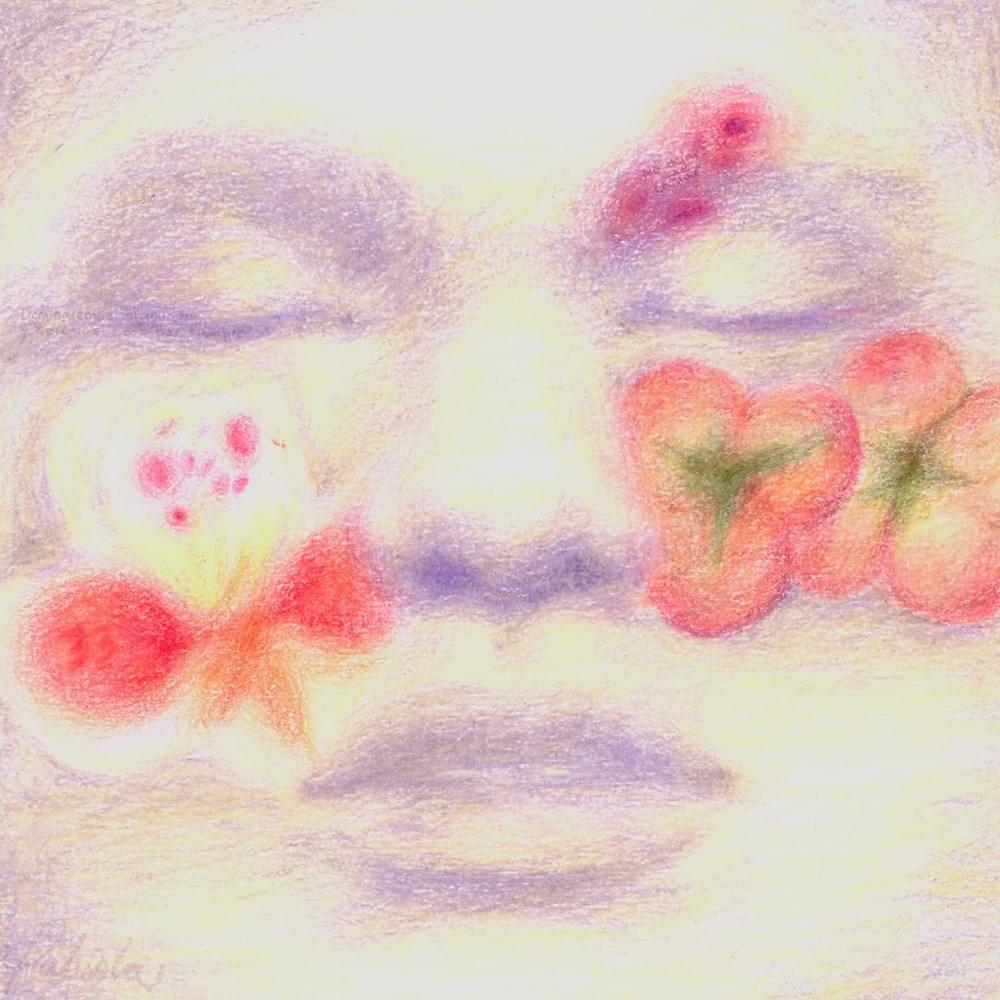
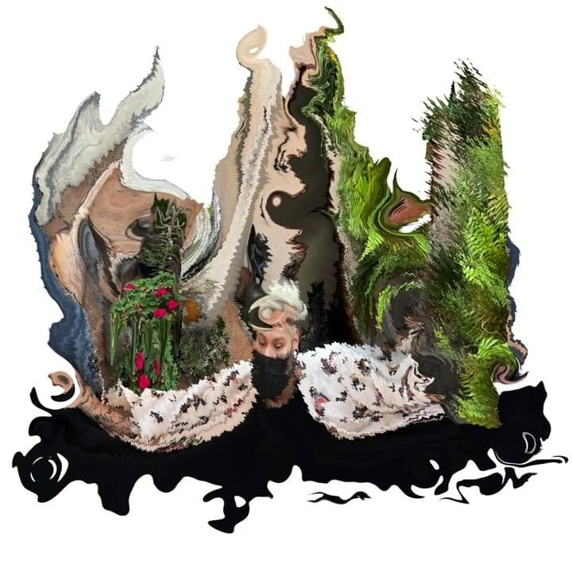
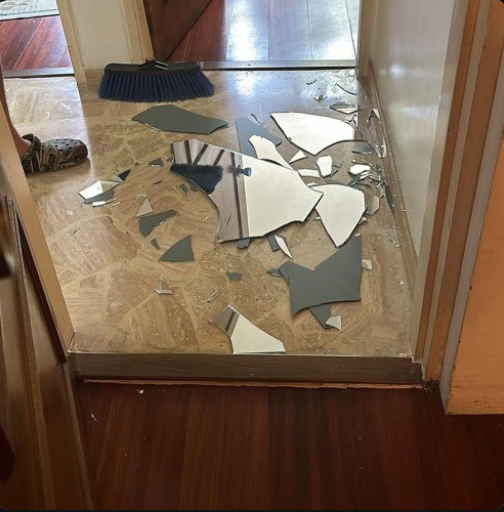
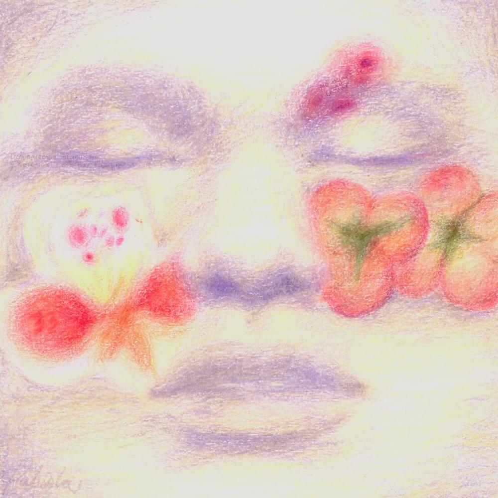

Biografía y estilo

Quien es suei?
Reinaldo Javier Guzmán Torres, conocido en el medio artístico y musical como Suei, es un cantante, compositor y productor musical venezolano. Nació en Barquisimeto, Lara, Venezuela. Se caracteriza por marcar un estilo y sonidos únicos en sus canciones, luciéndose como productor de las mismas.inicios en la musica
Suei cuando era un niño, aprendió a tocar la batería debido a que su papá era dueño de una tienda de equipos e instrumentos de música. Suei con doce años de edad, aprendió a usar el programa FL Studio para producir música inspirado por el artista Skrillex y a sus quince años comenzó a cantar. Uno de sus primeros temas fue "Cliché aunque su momento de oro fue a finales de 2020 cuando salió su tema mas popular "bye".Su presencia en redes y la estética visual de sus proyectos han convertido a Suei en un referente del pop alternativo actual y esto no es ninguna sorpresa ya que desde sus 3 primeros ep's lleva evolucionando su sonido desde el RNB al plugg que lo caracteriza y hoy en dia ha tomado mas ese camino del pop alternativo y el neo soul en su ultimo proyecto "Fabiola" y su ultimo sencillo "Japanese Dem"

 







